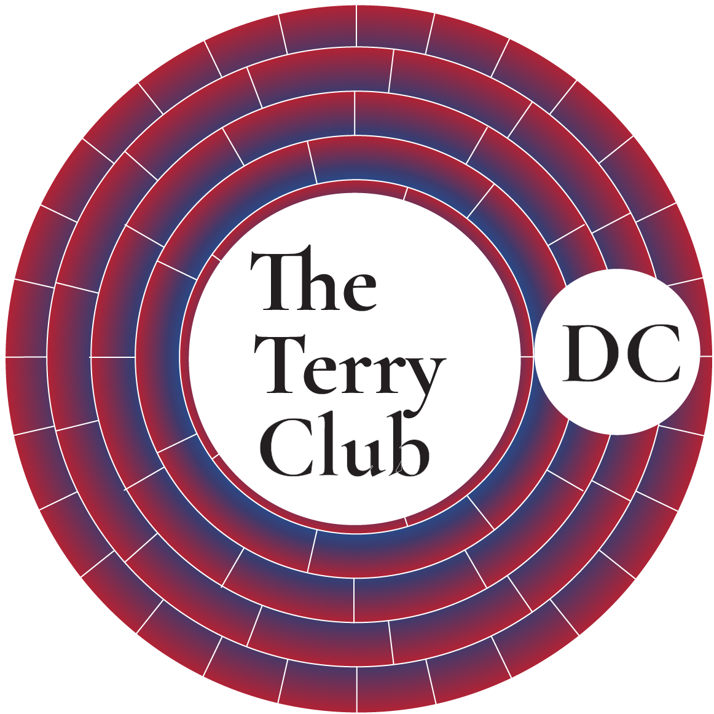
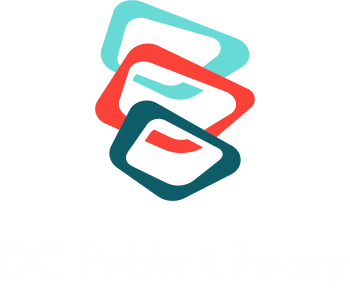

MLK Library · First Floor, Room 105
Bring your stories. Leave with craft, community, and a finished body of work.

The Terry Club is a year-long writing program at MLK Library walking participants through Blake Snyder's Save the Cat story-structure method, one beat per session, alongside a workshop queue where writers get their own work read and discussed by the group. By September, the goal is a complete first draft, or a meaningfully advanced short story or revision.
Facilitated by Vi Lawani, Library Associate. Twelve sessions, Saturdays 3:30–5:30 PM, October 3, 2026 through September 4, 2027. Adults and teens (13–19) welcome.
October 3 is an intro session on its own: a Save the Cat beat sheet discussion, an introduction to reading like a writer, and a formal invitation to Lagos Library Club. No workshop queue yet. November 14 and December 12 run as combined Terry Club × Lagos Library Club sessions — book discussion alongside the craft work. The Izu-based workshop queue officially starts December 12.
| Time | Segment |
|---|---|
| 3:30–3:55 | Welcome, temperature check, recap of last session's beat |
| 3:55–4:15 | Beat lesson — applied to your own work |
| 4:15–5:15 | Workshop — four writers read and discussed, ~15 min each |
| 5:15–5:25 | Next beat and theme preview, submission deadlines |
| 5:25–5:30 | Close |
Rather than volunteer sign-up or assigned appointments, your place in the reading queue is set at registration, based on registration order — a fair, transparent seat in line. Each session workshops four writers. Behind the scenes, that queue position maps onto the traditional Igbo four-day market week:
| # | Date | Focus | Theme |
|---|---|---|---|
| 1 | Oct 3, 2026 | Opening Image & Theme Stated | Introduction to Club |
| 2 | Nov 14, 2026 | Set-Up | Thanksgiving |
| 3 | Dec 12, 2026 | Catalyst & Debate | The holidays |
| 4 | Jan 9, 2027 | Break into Two | New Year |
| 5 | Feb 6, 2027 | B Story | Valentine's Day |
| 6 | Mar 6, 2027 | Fun and Games | Prep for spring |
| 7 | Apr 3, 2027 | Midpoint | Easter / Passover / spring |
| 8 | May 1, 2027 | Bad Guys Close In | International Workers' Day |
| 9 | Jun 12, 2027 | All Is Lost | Juneteenth / Summer Solstice |
| 10 | Jul 10, 2027 | Dark Night of the Soul | Bastille Day |
| 11 | Aug 7, 2027 | Break into Three & Finale | Back-to-school |
| 12 | Sep 4, 2027 | Final Image | Year 1 celebration |
Vi Lawani is also the DCPL anchor for Lagos Library Club, a monthly reading series produced by Naija Girl Talks, founded by Olamide Iyanda. It's hosted at MLK Library, with lighter versions also popping up at other DCPL branches — and occasionally outside the DCPL system entirely. Lagos Library Club runs on its own dates alongside The Terry Club: 10/17, 11/14, 12/12, 01/23, 02/20, 03/20, 04/17, 05/15, 06/26, 07/24, 08/21, 09/18.
On select DCPL holidays and other dates as they come up, a lighter version pops up at the branches, at MLK or outside the DCPL system — standalone craft sessions, no year-long commitment: Terry Club Steamed (STEAM, teens), Terry Parle le Français Aussi (French-language writing), Terry Out in Town (DC-as-setting + bike outreach), and TTC: In the Branches (short stories). Dates: Oct 12, Nov 11, Jan 18, Feb 15, Apr 16, rotating across Mt. Pleasant, Petworth, Southwest, Benning, and Anacostia.
Registration order sets your place in the workshop queue.
Submitting opens your email app with your details pre-filled — just hit send.
The Terry Club — part of The Sunlight Engine.